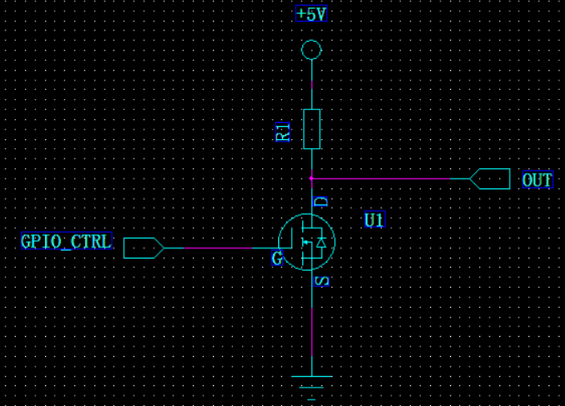
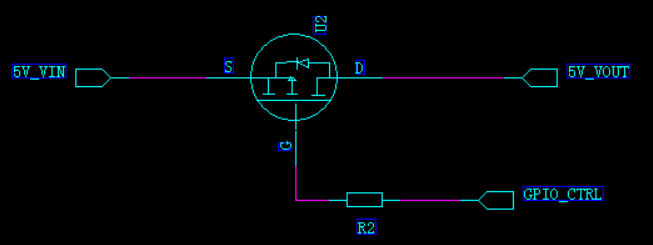

分享技术, 分享精彩
学过的东西, 要记得做个记录
三极管
MOS管
参考: 超低内阻mos管-MOS总结
分类

场效应管主要分为: 结型场效应管 和 金属-氧化物-半导体型场效应管(MOS管), 这两种都有P管和N管.
结型场效应管, 在实际应用中几乎不用, 主要用的是MOS管.

使用场景
一般主板上使用最多的是增强型MOS管
NMOS最多, 一般多用在信号控制上
其次是PMOS, 多用在电源开关等方面
耗尽型几乎不用
N和P区分

寄生二极管
由于生产工艺, mos管会有一个寄生二极管(也叫体二极管)
寄生二极管是有方向的, NMOS是由S极→D极, PMOS是由D极→S极
寄生二极管和普通二极管一样, 正接会导通, 反接截止
对于NMOS, 当S极接正, D极接负, 寄生二极管会导通, 反之截止
对于PMOS, 当D极接正, S极接负, 寄生二极管导通, 反之截止

某些场合下, 也会选择走寄生二极管
导通条件
MOS管是压控型, 导通由G和S极之间压差决定
对NMOS来说, Vg-Vs>Vgs(th), 即G极和S极的压差大于一定值, MOS管会导通, 但是也不能大太多, 否则烧坏MOS管, 开启电压和其他参数可以看具体器件的SPEC.
对PMOS来说, Vs-Vg>Vgs(th), 即S极和G极的压差大于一定值, MOS管会导通, 同样的, 具体参数看器件的SPEC.
基本开关电路
NMOS管开关电路
当GPIO_CTRL电压小于MOS管开启电压时, MOS管截止, OUT通过R1上拉到5V, OUT=5V
当GPIO_CTRL电压大于MOS管开启电压时, MOS管导通, D极电压等于S极电压, 即OUT=0V

PMOS管开关电路
PMOS管最常用在电源开关电路中, 当GPIO_CRTL=0V时, S和G极压差大于MOS管开启电压时, MOS管导通, 5V_VOUT=5V_VIN

与三极管的区别
三极管是电流控制, MOS管是电压控制, 主要有如下的区别:
-
只容许从信号源取少量电流的情况下, 选用MOS管；在信号电压较低, 有容许从信号源取较多电流的条件下, 选用三极管.
-
MOS管是单极性器件(靠一种多数载流子导电), 三极管是双极性器件(既有多数载流子, 也要少数载流子导电).
-
有些MOS管的源极和漏极可以互换运用, 栅极也可正可负, 灵活性比三极管好.
-
MOS管应用普遍, 可以在很小电流和很低电压下工作.
-
MOS管输入阻抗大, 低噪声, MOS管较贵, 三极管的损耗大.
-
MOS管常用来作为电源开关, 以及大电流开关电路、高频高速电路中, 三极管常用来数字电路开关控制.
G和S极串联电阻的作用
MOS管的输入阻抗很大, 容易受到外界信号的干扰, 只要少量的静电, 就能使G-S极间等效电容两端产生很高的电压, 如果不及时把静电释放掉, 两端的高压容易使MOS管产生误动作, 甚至有可能击穿G-S极, 起到一个固定电平的作用.
G极串联电阻的作用
MOS管是压控型, 有的情况下, 为什么还需要在G极串联一个电阻呢？
1, 减缓Rds从无穷大到Rds(on). 2, 防止震荡, 一般单片机的I/O输出口都会带点杂散电感, 在电压突变的情况下, 可能与栅极电容形成LC震荡, 串联电阻可以增大阻尼减小震荡效果. 3, 减小栅极充电峰值电流
MOS管的米勒效应
关于MOS管的米勒效应, 可以阅读文章: 臭名昭著的MOS管米勒效应
选型要点
- 电压值
关注Vds最大导通电压和Vgs最大耐压, 实际使用中, 不能超过这个值, 否则MOS管会损坏.

关注导通电压Vgs(th), 一般MOS管都是用单片机进行控制, 根据单片机GPIO的电平来选择合适导通阈值的MOS管, 并且尽量留有一定的余量, 以确保MOS可以正常开关

- 电流值
关注ID电流, 这个值代表了PMOS管的能流过多大电流, 反应带负载的能力, 超过这个值, MOS管也会损坏

- 功率损耗
功率损耗需要关注以下几个参数, 包括热阻、温度. 热阻指的是当有热量在物体上传输时, 在物体两端温度差与热源的功率之间的比值, 单位是℃/W或者是K/W, 热阻的公式为ThetaJA = (Tj-Ta)/P, 和功率和环境温度都有关系

- 导通内阻
导通内阻关注PMOS的Rds(on)参数, 导通内阻越小, PMOS管的损耗越小, 一般PMOS管的导通内阻都是在mΩ级别
- 开关时间
MOS作为开关器件, 就会有开关时间概念, 在高速电路中, 尽可能选择输入、输出电容Ciss&Coss小、开关时间Ton&Toff短的MOS管, 以保证数据通信正常
参数解释推荐阅读文章: 带你读懂MOS管参数「热阻、输入输出电容及开关时间」
- 封装
根据PCB板的尺寸, 选择合适的PMOS管尺寸, 在板载面积有限的情况下, 尽可能选择小封装；尽量选择常见封装, 以备后续选择合适的替代料
usb,电源,电池-供电电路
C语言
编译过程
预处理: 展开头文件及宏定义
gcc -E -I./inc test.c -o test.i
cpp test.c -I./inc -o test.i
编译: 将预处理的代码翻译成汇编代码
gcc -S -I./inc test.c -o test.s
汇编: 将汇编代码翻译成机器码, 这一步生成二进制格式的目标文件
as test.s -o test.o
链接: 将目标文件和库文件链接成最后的可执行程序
ld -o test.out test.o inc/mymath.o ...libraries...
内存布局
栈区
局部变量, 编译器在编译时已经确定了栈的大小
堆区
malloc分配的内存, 程序员自己控制 分配与释放
数据区
全局区(静态区)
如果已初始化, 放在DATA段
如果未初始化, 放在BSS段, 这里只保存必要的大小信息, 不占用可执行程序的大小, 加载程序时分配内存
常量区
常量字面量
代码区
函数定义
大小端 位域
大小端:
intel芯片用的是小端, 就是内存是递增的, 数据是按照字节存放的, 低位数据放在低地址上, 不符合人类的阅读顺序, 比如: 对int类型数据 它的数据是: b3 b2 b1 b0, 内存从低到高: b0 b1 b2 b3
结构体对齐
-
第一个成员的偏移量为0
-
其它成员的偏移量是其对齐数的整数倍
-
结构体的大小为最大对齐数的整数倍
例子： struct One { char a; double b; short c; int d; char e; }; 规则1： a的偏移量是0 规则2： 由于b的对齐数是8,所以1个字节补7个字节，b的偏移量为 0 + 1 + 7 = 8 由于c的对齐数是2,c前面的长度是 8 + 8 = 16, 是2的倍数， 所以c的偏移量是 16 由于d的对齐数是4,d前面的长度是 16 + 2 = 18, 不是4的倍数， 补2个字节， d的偏移量是 18 + 2 = 20 由于e的对齐数是1,e前面的长度是 20 + 4 = 24, 是1的倍数, d的偏移量就是 24 整体的大小为 24 + 1 = 25 规则3： 由于25不是最大对齐数的整数倍, 所以补7个字节, 为32
另外:
如果使用了 #pragma pack(4) 这个宏可以改变最大对齐数, 这意味着比如double的对齐数就是4. 也可以使用: __attribute__((__aligned__(4))) #pragma pack(4) struct One { char a; double b; short c; int d; char e; }; 规则1： a的偏移量是0 规则2： 由于b的对齐数是4,所以1个字节补3个字节，b的偏移量为 0 + 1 + 3 = 4 由于c的对齐数是2,c前面的长度是 4 + 8 = 12, 是2的倍数， 所以c的偏移量是 12 由于d的对齐数是4,d前面的长度是 12 + 2 = 14, 不是4的倍数， 补2个字节， d的偏移量是 14 + 2 = 16 由于e的对齐数是1,e前面的长度是 16 + 4 = 20, 是1的倍数, d的偏移量就是 20 整体的大小为 20 + 1 = 21 规则3： 由于21不是最大对齐数的整数倍, 所以补3个字节, 为24
gcc中常用属性
用于设置编译器的一些特殊行为
设置对齐字节数:
__attribute__((__aligned__(4)))
取消优化对齐, 按照实际字节数存储
__attribute__((packed))
将函数或数据放到特定的代码段:
__attribute__((section("section-name")))
阻止函数内联:
__attribute__((noinline))
让函数总是内联:
__attribute__((__always_inline__))
设置特定函数的优化级别， O0,O1,O2,O3:
__attribute__((optmize("Ox")))
gcc 优化
优化级别
O0,O1,O2,O3,Os
优化方法
通过给gcc参数:
gcc -O2 ...
通过代码:
给这行代码以下的代码设置优化级别:
#pragma GCC optimize ("O3")
给特定函数设置属性:
__attribute__((optmize("O3")))
main函数之前发生的事
大概是:
- 设置栈帧
- 设置bss区域数据为0
- 如果需要, 执行 hardware/software init
- 配置参数
- 调用main
- 执行exit.
Rust 笔记
Rust 的 安装与卸载
参考链接:
https://www.rust-lang.org/zh-CN/tools/install
安装:
curl --proto '=https' --tlsv1.2 https://sh.rustup.rs -sSf | sh
版本号:
rustc --version
升级:
rustup update stable
rustup update
设置默认 版本:
rustup default stable
rustup default nightly
工具链
rustup toolchain install nightly
rustup toolchain install nightly-2020-11-19
rustup toolchain list
rustup default nightly-2020-11-19
ps:
"2020-11-19" 这个时间是在 rust 的 git 中的tag上找的
rustup override set nightly
## riscv
rustup target add riscv32imac-unknown-none-elf
卸载:
rustup self uninstall
vscode 中 rust 的插件
1. rust-analyzer
2. Crates
3. Better TOML
4. CodeLLDB
Rust hello_world
编写点一个程序:
vim main.rs
fn main() {
println!("Hello, world!");
}
编译:
rustc main.rs
运行:
./main
cargo 命令
添加工具:
cargo install cargo-generate
cargo install cargo-edit
cargo install mdbook
创建项目:
cargo new hello_cargo
编译 并生成可执行程序:
cd hello_cargo
cargo build
cargo build --release
编译 但不生成 可执行程序:
cargo check
运行目标程序 (也可以一步构建项目):
cargo run
创建:
cargo new hello_world <--bin>, 创建一个二进制程序
cargo new hello_world --lib, 创建一个库
库
kurbo
曲线工具
lyon
路径细分库, 可以用于基于GPU的2D图形渲染
tokio
https://github.com/tokio-rs/tokio
embedded_graphics
mcu gui
embedded_sdmmc
iced
sudo apt install libssl-dev
官方的例子:
git clone https://github.com/hecrj/iced.git
cd iced
cargo build
// --features glow,glow_canvas
cargo run --package todos
// 如果无法运行, 缺少显示驱动
sudo apt install libvulkan1 mesa-vulkan-drivers vulkan-utils
iced: 编译 并 运行所有的 examples
#!/bin/bash
examples=(iced_core iced_futures iced_graphics iced_native iced_style iced_glow iced_glutin iced_winit iced_web iced_wgpu bezier_tool iced clock color_palette counter custom_widget download_progress events game_of_life geometry integration pane_grid pick_list pokedex progress_bar qr_code scrollable solar_system stopwatch styling svg todos tour)
for example in ${examples[@]}; do
cargo build --verbose --package $example
done
for example in ${examples[@]}; do
echo "start run: cargo run --verbose --package $example"
cargo run --verbose --package $example
done
iced 例子
学习基本的布局:
target/debug/pane_grid
examples/tour
学习canvas:
examples/clock
bevy, 游戏引擎
git clone https://github.com/bevyengine/bevy
cargo run --example breakout
libusb, usb库
在windows上找不到libusb库, 在 ~/.cargo/config 中添加:
[target.x86_64-pc-windows-msvc.'usb-1.0']
rustc-link-search = ['D:\libs\64bit']
rustc-link-lib = ['libusb-1.0']
wasm 开发
安装 wasm-pack:
curl https://rustwasm.github.io/wasm-pack/installer/init.sh -sSf | sh
cargo install cargo-generate
cargo generate --git https://github.com/rustwasm/wasm-pack-template -n wasm-app
cd wasm-app
wasm-pack build
npm init wasm-app www
cd www
yarn
cd ../pkg
yarn link
cd ../www
yarn link "wasm-app"
vue vite rust wasm
yarn create @vitejs/app my-vue-app --template vue
cd my-vue-app
yarn add -D vite-plugin-rsw
yarn
cargo generate --git https://github.com/rustwasm/wasm-pack-template -n wasm-app
vite.config.js:
import { defineConfig } from "vite";
import vue from "@vitejs/plugin-vue";
import ViteRsw from 'vite-plugin-rsw';
// https://vitejs.dev/config/
export default defineConfig({
plugins: [
vue(),
ViteRsw({
mode: "release",
crates: ["wasm-app"],
}),
],
});
web
使用 nvm 管理 nodejs
网址: https://github.com/nvm-sh/nvm
curl -o- https://raw.githubusercontent.com/nvm-sh/nvm/v0.38.0/install.sh | bash
nvm install --lts
npm config set registry https://registry.npm.taobao.org
npm config get registry
npm install -g yarn
yarn config set registry 'https://registry.npm.taobao.org'
yarn 常见用法
yarn global add typescript
生成tsconfig.json文件
yarn add -D typescript
yarn tsc --init
使用npm安装cordova, 执行cordova create报错
npm ERR! not a package.........@cordova-app-hello-world\index.js
卸载cordova, 使用yarm重新安装即可:
sudo npm uninstall -g cordova
sudo npm install -g yarn
sudo yarn config set registry https://registry.npm.taobao.org
sudo yarn global add cordova
npm查看版本号
npm ls electron 本地包版本号
npm ls electron -g 全局包版本号
package.json 版本约定号
~version
大概匹配某个版本
如果minor版本号指定了, 那么minor版本号不变, 而patch版本号任意
如果minor和patch版本号未指定, 那么minor和patch版本号任意
如：~1.1.2, 表示>=1.1.2 <1.2.0, 可以是1.1.2, 1.1.3, 1.1.4, ....., 1.1.n
如：~1.1, 表示>=1.1.0 <1.2.0, 可以是同上
如：~1, 表示>=1.0.0 <2.0.0, 可以是1.0.0, 1.0.1, 1.0.2, ....., 1.0.n, 1.1.n, 1.2.n, ....., 1.n.n
^version
兼容某个版本
版本号中最左边的非0数字的右侧可以任意
如果缺少某个版本号, 则这个版本号的位置可以任意
如：^1.1.2 , 表示>=1.1.2 <2.0.0, 可以是1.1.2, 1.1.3, ....., 1.1.n, 1.2.n, ....., 1.n.n
如：^0.2.3 , 表示>=0.2.3 <0.3.0, 可以是0.2.3, 0.2.4, ....., 0.2.n
如：^0.0, 表示 >=0.0.0 <0.1.0, 可以是0.0.0, 0.0.1, ....., 0.0.n
jquery
prop attr的区别：
在这里, 我们可以将attribute理解为“特性”, property理解为为“属性”从而来区分俩者的差异。
举个例子, option当做一个对象：
var option = {
selected:false,
disabled:false,
attributes:[],
...
}
attributes是自定义的键值对, property是对象自身的属性:selected、disabled、attributes...
## 报错:sh: 1: tsc: not found
需要安装typescript, 执行:sudo npm install -g typescript
chrome插件开发
[an example](https://developer.chrome.com/extensions/getstarted/ "略略")
div层调整zindex属性无效原因分析及解决方法
这种情况发生的条件有三个:
1、父标签 position属性为relative
2、问题标签无position属性（不包括static)
3、问题标签含有浮动(float)属性
eg:z-index层级不起作用, 浮动会让z-index失效
子元素浮动,父div没有自适应
clear:both 不管用?
给父元素添加: overflow:hidden
一个div内的多个同级div, 同级的div在同一行, 怎么保证它们高度一致?
margin-bottom
1,在当前窗口中跳转:
window.location.href('url') 存在兼容问题,火狐不支持,可以使用 window.location='url';
history.back();返回
2,学会使用data*属性,这是属于html5的标签属性, 传递参数时可以在路径中加上?key1=value1&key2=value2的形式
3,onbar事件
使用taglib prefix ="c", 循环
4,使用锚点:
<a name="anchor1"/>.........<a target="#anchor1"/>
软件 Artisteer firework ps 美图秀秀
textContent与innerHTNL的区别:textContent返回元素及其后代的文本内容,而innerHTML则返回HTML
ie和火狐遍历子节点chileNodes的区别:ie没有空格,火狐带空格
ul中的li居中:li的默认display为block,设置li为inline
对于浮动元素的高度为0,可以通过设置:如下:
ul:after {
content: "";
display: table;
clear: both;
}
动画滚动:
$msg_container.animate({ scrollTop: $msg_container.prop("scrollHeight") });
/**
* 禁用右键菜单
*/
document.oncontextmenu = function(){
event.returnValue = false;
};
/**
* 禁用选中功能
*/
document.onselectstart = function(){
event.returnValue = false;
};
/**
* 禁用复制功能
*/
document.oncopy = function(){
event.returnValue = false;
};
/**
* 禁用鼠标的左右键
*/
document.onmousedown = function(){
if(event.which==1){//鼠标左键
return false;
}
if(event.which==3){//鼠标右键
return false;
}
};
/**
* 获取键盘上的输入值
*/
document.onkeydown = function(){
console.info(event.which);
if(event.which==13){
console.info("回车键");
}
};
设置页面居中
background:url(${sb.imageUrl }) no-repeat; background-size:150px 100px; background-position: center;
vue 笔记
使用vite工具
创建项目
yarn create @vitejs/app
算法
积分
微分
\[ \mu = \frac{1}{N} \sum_{i=0} x_i \]
mdbook 构建工具
安装
从预编译文件中安装
安装发布到 Crates.io 的版本
cargo install mdbook
mdbook 用法
mdbook help
mdbook init
mdbook build
mdbook watch --open
mdbook serve --open -n 0.0.0.0
可选项
output.html.print 是否开起打印功能, 打印功能是 它打开生成的一个包含所有内容的print.html页面, 然后打印这个文件...如果保存为pdf的话没有目录
no-section-label 这个可以去掉侧边栏的数字前缀
output.html.fold 可以控制sidebar是否可以折叠及默认行为
git笔记
第一次提交代码
git init
git remote add origin git@gitee.com:imxood/stm32h750_rt_app.git
git pull origin master
git branch --set-upstream-to=origin/master
git add .
git commit -m "."
git push
warning: CRLF will be replaced by LF
git config --global core.autocrlf false
执行 git status 时 中文路径乱码解决:
git config --global core.quotepath false
创建新分支并删除历史commits
git checkout --orphan main, 创建没有commits的孤儿分支
git add . && git commit -m "."
git push --set-upstream origin main